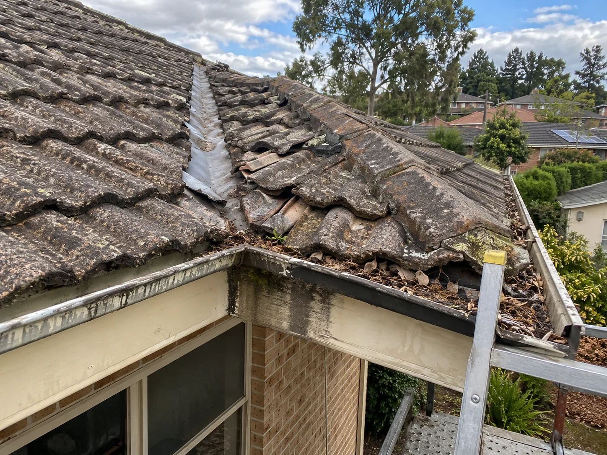
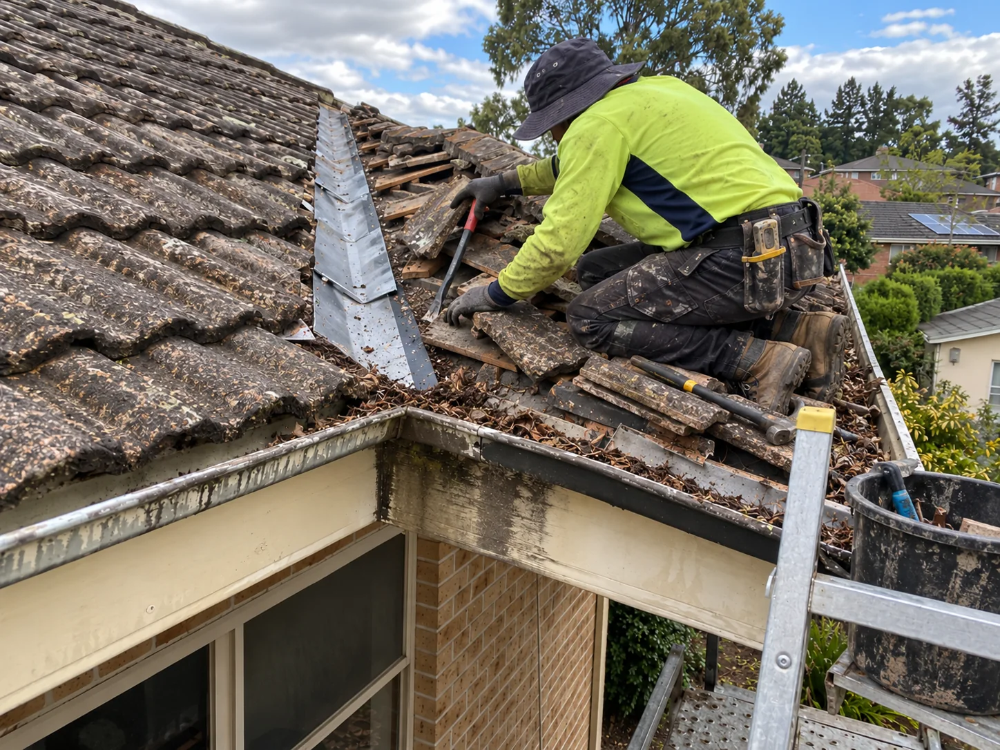
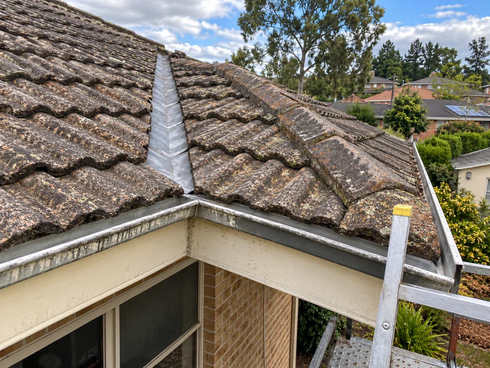
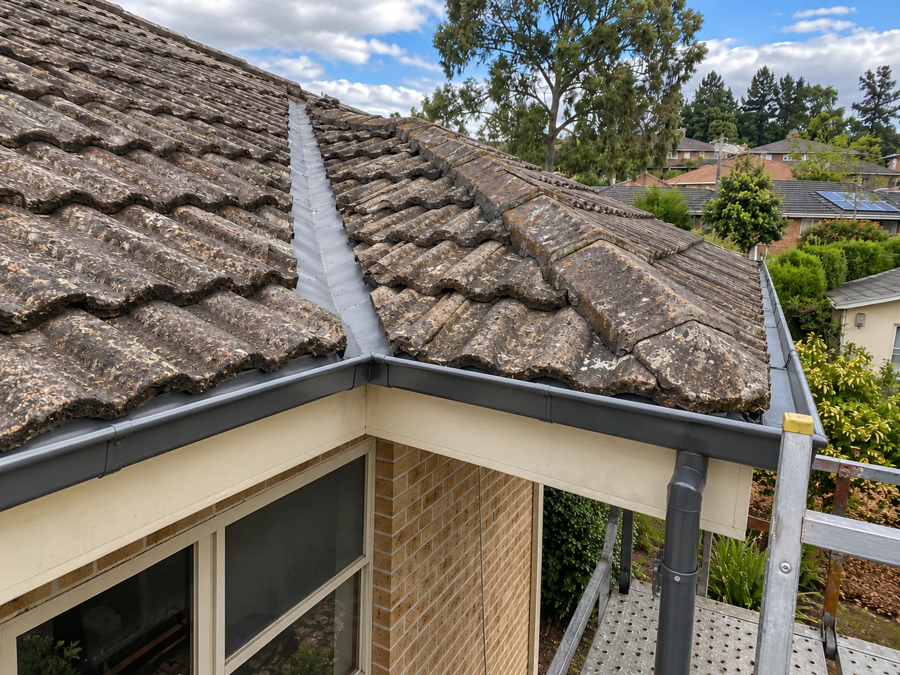

Years of roofing experienceA standardised repair team
Ellis Services Group · Adelaide
Roof repairsAdelaide.
Find the cause. Repair it properly.
Inspect → Repair → Protect
Leaks, damaged tiles, ridge capping and gutters. Our experienced team inspects your roof, identifies the damage and completes professional repairs with a clear written quote.
Enquiry response targetQuick contact and appointments
Customers servedTrusted by returning clients
Start with the symptom
Roof problems are not all the same.
Choose the work you need: leak investigation and repair, tile and ridge repairs, gutter and downpipe work, or roof restoration. We assess the property before confirming the scope and written quote.
Roof leak repairs
We trace the water-entry path, check the surrounding roof and drainage, and repair the identified defects.
Explore leak repairsTile & ridge repairs
For broken tiles, loose ridge capping, tired flashing, valleys and roof-edge issues.
Explore roof repairsGutters & downpipes
Overflow and blocked drainage can direct water where it should not go.
Explore drainage repairsExplore gutter cleaningRoof restoration
Explore a broader restoration scope for a weathered roof.
Explore restorationService areas
Explore Adelaide service areas and roof repair support.
View service areasIndustry answers
Practical articles for homeowners comparing repairs, restoration and maintenance.
Read industry answersInside an Ellis repair
The work behind a sound roof.
See the deteriorated ridge, the repair in progress and the finished roof. Our team checks the affected components, prepares the repair area and restores the ridge line.
- Inspect: identify damaged bedding and ridge details.
- Repair: prepare and repair the affected components.
- Protect: complete and check the finished work.




Adelaide roof repairs
Local support across Adelaide.
We provide roof repairs and maintenance across Adelaide. Select your area to arrange an assessment at the property.
Roof repair advice
Roof repair questions, answered.
Need help with a roof leak, damaged tiles, flashing or gutters? Contact Ellis Services Group. We inspect the roof on site, identify the cause and explain the repair work and quote.
Finding the real cause of a roof leak
Why a ceiling stain can sit away from the original entry point, and what observations help shape a careful repair assessment.
Read article ↗Ridge capping: when to repoint or re-bed
Understand the difference between ridge caps, bedding and pointing before you compare proposed repair scopes.
Read article ↗Repair or restoration: how to compare
A practical way to compare a targeted repair, a broader restoration scope and a replacement discussion.
Read article ↗Your roof. Our repair team.
Arrange your roof assessment.
Tell us your suburb and the roof issue. Ellis will arrange an on-site inspection, identify the damaged components and explain the repair plan and written quote.
0434 276 883 ↗Office: 63 Pirie St, Adelaide SA 5000
Meet Ellis Services Group ↗
Call, email or use the quote form above to arrange your inspection.
Request a quote ↗Visit by appointment
Adelaide office.
63 Pirie St, Adelaide SA 5000, Australia
Please contact us before visiting. You can view our Adelaide office location on the map below.